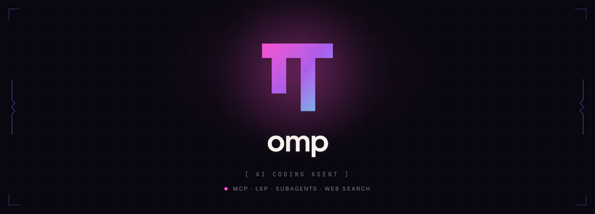

Oh My Pi（omp）入門チュートリアル
Oh My Pi（コマンドライン略称 omp）は、ターミナルで動作するオープンソースの AI プログラミングエージェントで、Can Bölük が Mario Zechner の Pi からフォークし、大幅に拡張したものです。
Oh My Pi の核心理念は次のとおりです：ツールは「接続する」だけではなく、極限まで磨き上げられるべきです——すべてのツールはベンチマークテストで調整され、編集のヒット率、検索速度、LSP 統合においても同種で最高を目指しています。
-
公式サイト：omp.sh

omp とは？
omp はターミナルファーストの AI プログラミングエージェントです。IDE に依存せず、ターミナル上でフル機能の TUI として動作し、LSP、DAP デバッガ、Python/JavaScript デュアル実行カーネル、サブエージェント並列処理、セッションを跨ぐ記憶、そしてベンチマーク調整済みの 32 個のツールを統合しています。
他の AI プログラミングツールとの違い
| 観点 | Claude Code / 同種ツール | omp |
|---|---|---|
| 編集形式 | str_replace（エラーが発生しやすい） | Hashline（コンテンツハッシュアンカー、空白差異に耐性） |
| ファイル読み取り | 全文ダンプ | 構造サマリー + 必要に応じて展開 |
| LSP | なし、または限定的 | 完全な 14 個の LSP 操作（リネーム、ジャンプ、コードアクションを含む） |
| デバッガ | 无 | 完全な DAP：lldb、dlv、debugpy |
| サブエージェント | なし、または限定的 | 並列サブエージェント、分離されたワークスペース、型付き戻り値 |
| 検索 | shell から ripgrep を呼び出し | インプロセス ripgrep、fork/exec なし |
| 動作補正 | prompt に依存 | ストリームルール：正規表現ヒット → mid-token 注入 → リトライ |
| セッションを跨ぐ記憶 | 无 | Hindsight メモリーバンク（プロジェクトレベル） |
| コード実行 | Python sandbox | 永続 Python + Bun デュアルカーネル、相互に Agent ツールを呼び出し可能 |
| 技術スタック | 純粋な JS/Python | ~55,000 行の Rust コア + TypeScript |
インストール
このセクションでは、macOS、Linux、Windows での omp のさまざまなインストール方法を紹介します。
macOS / Linux（推奨）
$ curl -fsSL https://omp.sh/install | sh
インストールスクリプトは Bun が利用可能かどうかを自動検出します：Bun（≥ 1.3.14）がある場合は Bun でのインストールを優先し、なければプリビルドバイナリをダウンロードします。
Homebrew（macOS / Linux）
$ brew install can1357/tap/omp
Bun（推奨、最新版を取得）
$ bun install -g @oh-my-pi/pi-coding-agent
Windows（PowerShell）
$ irm https://omp.sh/install.ps1 | iex
Windows はネイティブ実行に対応しており、WSL は不要です。
バージョン固定（mise）
$ mise use -g github:can1357/oh-my-pi
インストールの検証
$ omp --version
Shell の自動補完
omp は CLI メタデータから補完スクリプトを動的に生成するため、サブコマンド、フラグ、列挙値が実際の CLI と乖離することはありません：
# zsh（加入 ~/.zshrc） eval "$(omp completions zsh)" # bash（加入 ~/.bashrc） eval "$(omp completions bash)" # fish omp completions fish > ~/.config/fish/completions/omp.fish
ソースからビルド
$ git clone https://github.com/can1357/oh-my-pi $ cd oh-my-pi $ bun setup # 安装 Bun 工作区依赖并构建 Rust N-API 插件 $ bun dev # 启动开发版 CLI # 修改 Rust 代码后，重新构建原生插件 $ bun run build:native
初回設定：モデルプロバイダーにログイン
omp を初めて実行したら、/login または /model を使用して AI プロバイダーを設定します。
方法1：OAuth ワンクリックログイン（API Key 不要）
omp は複数のプロバイダーでの OAuth ログインをサポートしています。最も簡単な方法です：
/login # 打开交互式提供商选择器
OAuth に対応しているプロバイダーには、Anthropic、OpenAI Codex、Google Antigravity（Gemini）、Perplexity、Cursor、GitHub Copilot、GitLab Duo などがあります。
方法2：API Key（プロバイダーに直接接続）
# 在环境变量里设置（推荐写入 ~/.zshrc 或 ~/.bashrc） export ANTHROPIC_API_KEY="sk-ant-xxxx" export OPENAI_API_KEY="sk-xxxx" export GOOGLE_API_KEY="xxxx"
または omp 内で直接設定します：
/model # 打开模型选择器，可以在这里配置 Key
方法3：Coding Plan サブスクリプション
Cursor、GitHub Copilot、Kilo、Kimi Code、MiniMax Coding Plan などのサービスをすでに契約している場合は、その契約に直接ルーティングできます：
/login # 选择对应的 Coding Plan 提供商，OAuth 授权
方法4：ローカルモデル（Ollama / LM Studio）
# 先启动 Ollama $ ollama serve # 在 omp 里选择 Ollama 提供商（key 可选） /model # 选择 Ollama，指向 http://localhost:11434
設定パス
すべての設定は ~/.omp/ ディレクトリに保存されます：
~/.omp/
agent/
settings.yml # 主配置文件
models.yml # 自定义模型/提供商
keybindings.yml # 快捷键绑定
rules/ # 流规则（stream rules）
skills/ # 技能文档
最初の対話：TUI 基本操作
このセクションでは、ompの全画面TUIインターフェースと基本的な操作方法を紹介します。
omp を起動
# 在项目目录下启动 $ cd ~/your-project $ omp
ompを起動すると全画面TUI（ターミナルユーザーインターフェース）に入ります。ツール呼び出しはカード形式でレンダリングされ、編集操作は保存前にプレビューが表示されます。
注意：ompはKittyキーボードプロトコルを使用します。最適な体験を得るために、このプロトコルをサポートするターミナル（Kitty、Ghostty、WezTerm、iTerm2）での実行を推奨します。
基本インタラクション
タスクを入力して、Enterキーで送信します：
> このプロジェクトのディレクトリ構造を分析して、主要モジュールが何かを教えてください
ompは自動的にread、searchなどのツールを呼び出してコードベースをスキャンし、構造化された要約を返します。
よく使うキー
| キー | 機能 |
|---|---|
| Enter | メッセージ送信 |
| Ctrl+J / Shift+Enter | メッセージ内で改行（送信しない） |
| Ctrl+P | 現在のロールで利用可能なモデルを循環切り替えします。します。 |
| Shift+Ctrl+P | 逆方向に循環切り替え |
| Ctrl+T | Todoパネルの展開/折りたたみ |
| Ctrl+C | 現在のタスクを中断 |
| Esc | 確認待ちの操作をキャンセル |
| ↑ / ↓ | 履歴メッセージ/オプションを閲覧 |
| ? | 空の入力時に「?」を挿入；/hotkeysでショートカットキー一覧を表示 |
単回実行（非対話モード）
# 一次性执行任务并退出 $ omp -p "列出所有 .ts 文件里未使用的 export" # 管道输入 $ git diff HEAD~1 | omp -p "给这个 diff 写一个精简的 commit message"
履歴セッションの復元
$ omp --resume # 打开会话选择器（Tab 补全可用） $ omp --resume <id> # 直接恢复指定会话
コアツールの詳細
ompの32個のツールは1つの名前空間に統合されており、read、search、bashが日常的に最も頻繁に使われる3つです。
read：統一読み取りインターフェース
readはompのキラーツールの1つです。ファイルを読むだけでなく、コンテンツの構造を理解します：
# 读文件（返回结构化摘要，而非全文 dump） read src/auth/login.ts # 读目录（返回树形结构概览） read src/ # 读 URL（返回结构化 Markdown，锚点保留） read https://docs.anthropic.com/en/api/messages # 读 arxiv 论文 PDF read https://arxiv.org/pdf/2604.10739v1 # 读 SQLite 数据库 read data/app.db # 读 GitHub PR（统一路径接口） read pr://can1357/oh-my-pi/1428 # 读 PR 的 diff read pr://can1357/oh-my-pi/1428/diff/1 # 读 GitHub Issue read issue://can1357/oh-my-pi/142
重要な設計：readはファイルに対してTree-sitterが生成した構造化要約（関数名、クラス名、重要なコメント）を返し、ファイル全体をコンテキストにダンプするのではありません。これによりTokenを大幅に節約しつつ、重要な情報を保持できます。詳細な内容が必要な場合、Agentは再度readを呼び出して特定の段落を展開します。
search：in-process ripgrep
# 正则搜索（无 fork/exec，直接在进程内跑）
search "useState\(" src/
# 带文件类型过滤
search "TODO:" --type ts
# 在内部 URL 上搜索（如 PR diff）
search "loginUser" pr://can1357/oh-my-pi/1063/diff
編集：Hashline 精密編集
詳細は次のセクションを参照。これはompの中で最も技術的に高度なツールの1つです。
bash：永続 Shell セッション
# 执行命令（bash 会话在调用间保持存活） bash: npm test bash: git log --oneline -10 bash: cargo build --release
ompのbashツールは完全なbrush shell（Rustで実装されたbash）を組み込んでおり、毎回新しいプロセスをforkするのではなく、永続的なセッションを維持し、環境変数と作業ディレクトリが呼び出しをまたいで保持されます。
eval：Python + JavaScript 永続カーネル
詳細は後続の章を参照。
lsp：完全な LSP 操作
詳細は後続の章を参照。
todo：タスク管理
ompには構造化されたタスクリストが組み込まれており、フェーズ（phase）とタスク状態の追跡をサポートします。Ctrl+TでTodoパネルの表示/非表示を切り替えます。
ask：構造化された質問
Agentはユーザーの判断が必要なときにaskを呼び出し、推奨オプション付きの対話型セレクターを表示します。出力に質問を混ぜるのではありません。
Hashline：より正確なファイル編集
これはompの最も重要な技術革新の1つです。このセクションではHashlineの動作原理とベンチマーク結果を紹介します。
従来の str_replace の問題
他のAgentのほとんどはstr_replace形式を使用して、モデルに「旧内容」+「新内容」のペアを出力させます。問題は次のとおりです：
- モデルは旧内容のスペース、改行、引用符を間違えやすい
- Agentの操作後にファイルが変更されると、アンカーが無効になる
- エラーにより大量のリトライが発生し、より多くのTokenを消費する
Hashline の解決策
Hashlineはモデルにコンテンツハッシュを使用して変更対象の行を識別させそれらの内容を再度出力させるのではなく：
# Hashline patch 示例（Agent 内部生成，你不需要手写）
@@{a3f2}
- const result = compute(x)
+ const result = compute(x, options)
@@{b7c1}
- return null
+ return undefined
{a3f2} は対象行のコンテンツのハッシュプレフィックスです。ファイルが変更されてハッシュが一致しない場合、patchは拒否されます静かに間違った場所に適用されることはありません。
ベンチマーク結果
READMEからの実測データ：
| モデル | 指標 | 効果 |
|---|---|---|
| Grok Code Fast 1 | 編集成功率 | 6.7% → 68.3%（10倍向上） |
| Gemini 3 Flash | vs str_replace | +5ポイント、Google自身の最良の実装を上回る |
| Grok 4 Fast | Output Token消費 | 61%削減 |
| MiniMax | 合格率 | 2.1倍向上（重みとPromptは完全に不変） |
ast_edit：構造化コードの書き換え
Hashlineよりも高レベルの編集ツールで、ast-grepのパターンマッチング後に構造化して書き換えます：
# 把所有 console.log(...) 替换掉 ast_edit: console.log($X) → logger.debug($X)
ast_editはまずproposed（プレビュー）カードを返し、Agentが確認してresolveを呼び出して初めて実際に保存されます——原子操作であり、全て成功するか、全て変更されないかのどちらかです。
ast_grep：構造化コードの検索
50以上の言語のTree-sitter構文マッチングをサポート：
# 找出所有没有 await 的 async 函数调用 ast_grep: "promise.then($X)"
LSP 統合：IDE が知っていることを Agent も知っている
ompは完全なLSP（Language Server Protocol）クライアントを統合しており、14種類の操作をサポートします。
LSP サーバーの設定
プロジェクトディレクトリの.omp/で設定するか、ompの設定ウィザードを使用します：
例
lsp:
servers:
typescript:
command: typescript-language-server
args: ["--stdio"]
rust-analyzer:
command: rust-analyzer
python:
command: pylsp
14 個の LSP 操作
| 操作 | 説明 |
|---|---|
| diagnostics | ファイル/ワークスペースの診断エラーを取得（IDEの赤い波線に類似） |
| hover | シンボルの型情報とドキュメントコメントを取得 |
| definition | 定義へジャンプ |
| references | すべての参照を検索 |
| rename | シンボルの名前変更（workspace/willRenameFilesを通じて、re-exportとbarrelファイルの同期更新を保証） |
| code_action | コードアクションの取得と実行（自動インポート、lintエラーの修正など） |
| completion | 補完リストを取得 |
| signature_help | 関数シグネチャのヘルプを取得 |
| document_symbols | ファイル内のすべてのシンボルを取得 |
| workspace_symbols | ワークスペース全体でシンボルを検索 |
| format | ファイルをフォーマット |
| range_format | 選択範囲をフォーマット |
| implementation | インターフェースの実装へジャンプ |
| type_definition | 型定義へジャンプ |
リネームの正しい方法
通常のAgentの名前変更：文字列を検索して1つずつ置換するため、見落としや誤置換が発生しやすい。ompの方法はLSPプロトコルを通じて完了します：
> 把 formatBytes 函数重命名为 humanizeFileSize
# omp 内部执行：
lsp.references("formatBytes") → 找到 5 处引用，分布在 3 个文件
lsp.rename("formatBytes", "humanizeFileSize") → 通过 LSP workspace/willRenameFiles
search "formatBytes" → 0 matches ✓ 完成
Re-exports、barrelファイル（index.ts）、aliased importsがすべて正しく更新されます。名前変更はテキスト置換ではなくLSPプロトコルで行われるためです。
デバッガ統合（DAP）
ompは完全なDAP（Debug Adapter Protocol）クライアントを実装しており、28のデバッグ操作をサポートします。
対応デバッガ
| 言語 | デバッガ |
|---|---|
| C / C++ / Rust | lldb-dap / codelldb |
| Go | dlv（Delve） |
| Python | debugpy |
| Node.js / TypeScript | Node.js built-in inspector |
| 汎用 | DAP互換の任意のデバッガ |
典型的なシナリオ：C プログラムのクラッシュの特定
> 这个 C 程序一直 segfault，帮我找原因
# omp 内部执行：
debug.launch("lldb-dap", "./build/demo")
debug.continue() # 运行到崩溃
debug.pause()
debug.stackTrace() # 查看调用栈
debug.scopes(frameId) # 查看局部变量
debug.evaluate("*ptr") # 评估表达式
典型的なシナリオ：Go サービスのデッドロック調査
> Go 服务挂住了，帮我看看
# omp 内部执行：
debug.attach("dlv", pid)
debug.threads() # 列出所有 goroutine
debug.stackTrace(threadId) # 查看挂住的 goroutine 调用栈
コード全体にfmt.Printlnやconsole.logを撒く必要はもうありません——ompは実際のデバッガを直接駆動します。
サブエージェント（Subagents）：並列処理
タスクが相互に独立したサブタスクに分割できる場合、ompはtaskツールを使用して並列サブAgentを生成します。各サブAgentは隔離されたワークスペースで実行され、最終的に型付けされた結果オブジェクトを返します。
ワークスペース分離メカニズム
ompはプラットフォームネイティブのファイルシステムスナップショットを使用してサブAgentのワークスペースを分離します：
| オペレーティングシステム / ファイルシステム | 分離メカニズム |
|---|---|
| macOS（APFS） | APFS clone（瞬時、ゼロcopy-on-write） |
| Linux（btrfs/zfs） | reflink |
| Linux（overlayfs） | overlay mount |
| Windows | projfs / rcopy |
各サブAgentは独立したワークスペースのコピーを取得するため、互いに干渉せず、マージ競合も発生しません。
使用例
> 我有三个微服务：auth-service、api-service、worker-service。
请同时检查它们的依赖有没有已知的安全漏洞，分别出报告。
# omp 内部执行：
task(workers=[
{name: "auth", workdir: "services/auth"},
{name: "api", workdir: "services/api"},
{name: "worker", workdir: "services/worker"}
])
# 三个子 Agent 并行跑，各自输出结构化 JSON：
# { findings: [...], severity: "high", affected: ["lodash@4.17.15"] }
# 父 Agent 合并结果，汇总报告
サブエージェント間通信（IRC）
並列サブAgent同士はircツールを使用して短いメッセージを通信し、役割分担を調整できます：
# 子 Agent A：
irc.send("ComponentsExports", {exports: ["Button", "Input"]})
# 子 Agent B 收到消息后调整自己的分析范围
サブエージェントの結果を取得
親Agentはパス構文を使用してサブAgentの構造化出力に直接アクセスできます：
# 读取子 Agent findings 的第一条记录的 path 字段 read agent://<subagent-id>/findings.0.path
Hindsight：セッションを跨ぐ記憶
Hindsightはompのプロジェクトレベルの記憶システムであり、Agentがセッション間でコードベースに対する理解を保持できるようにします。
動作原理
- retain：Agent が実行中に価値ある情報を発見したとき、能動的に retain を呼び出してメモリーバンクに書き込む
- recall：キーワードでメモリーバンクを検索する
- reflect：Hindsight にメモリーバンク内の情報を総合させ、合成回答を生成させる
- セッション終了のたびに、omp は自動的にセッションを「メンタルモデル」に圧縮し、次回セッションの最初のターンでロードする
スコープ
Hindsight はプロジェクトレベルのものです。A プロジェクトで学んだことは B プロジェクトに漏れません。記憶は .omp/ ディレクトリ（または ~/.omp/ 内でプロジェクトごとに分割）に保存されます。
実際の効果
初めてプロジェクトで omp を使うときは、プロジェクト構造を説明する必要があります。しばらく使うと、omp は自動的に以下のことを理解します：
- このプロジェクトが使っている技術スタック
- 主要モジュールの責務分担
- これまでに行ったリファクタリング
- どのファイルが「地雷原」（問題が頻発する箇所）か
コード実行：Python + JavaScript デュアルカーネル
ほとんどの Agent ツールは Python サンドボックスを1つだけ提供します。omp は2つの永続カーネルを実行し、両方とも Agent 自身のツールをコールバックできます。
Python カーネル（eval）
例
import pandas as pd
df = pd.read_csv(tool.read("data/sales.csv")) # Agent の read ツールでファイルをロードする
print(df.describe())
result = tool.search("revenue", "src/") # コードベースを検索する
JavaScript（Bun）カーネル（eval）
例
const data = tool.read("data/sales.csv") // 同様に Agent ツールを呼び出せる
const top = data.split('\n').slice(1)
.map(line => line.split(','))
.sort((a, b) => +b[2] - +a[2])
.slice(0, 5)
console.table(top)
デュアルカーネルで Prelude を共有
2つのカーネルは prelude（プリロードコンテキスト）を共有し、Python でデータを処理してから JS でチャートを生成できます。プロセス全体は連続した eval セッションであり、ツール画面から離れる必要はありません。
ストリームルール（Stream Rules）：リアルタイムな動作補正
これは omp 独自のリアルタイム行動修正メカニズムで、「モデルが言うことを聞かない」問題を解決します。
従来の方法の問題
すべての仕様を System Prompt に書き込むと、毎回の会話で全量の Token コストがかかり、しかもモデルが無視する可能性があります。
ストリームルールの仕組み
ルールはスリープ状態にあり、トリガー条件が出現するまで待機します：
- 正規表現でモデルのストリーム出力を監視
- ヒットすると（mid-token レベル）、即座に現在のストリームを中止
- ルール内容をシステムリマインダーとしてコンテキストに注入
- 同じ位置から再生成
- 注入されたルールはコンテキスト圧縮後も生存する
例
# ~/.omp/agent/rules/no-box-leak.yml
name: box-leak
pattern: "Box::leak"
reminder: |
本番コードパスで Box::leak を使用しないでください。
メモリリークは高負荷時にサービスが OOM になる原因となります。
Arc<str> または他の参照カウント方式に変更してください。
効果：モデルが Box::leak と書きかけたとき、ストリームが中止され、ルールが注入され、モデルが自動的に Arc に修正します。
/omfg でルールをすばやく作成
omp は、自然言語でルールを記述できる補助コマンドを提供し、正規表現とルールファイルを生成します：
/omfg 不要在任何地方用 any 类型，要求用具体的类型定义或 unknown
omp がルールを生成・検証・保存し、次回から有効になります。
モデルルーティング：40+ プロバイダー、4 つの役割
omp はモデル名ではなくロール（role）でタスクをスケジュールし、「適切なタスクに適切なモデル」を実現します。
4 つのモデル役割
| ロール | 用途 | CLI Flag | 環境変数 |
|---|---|---|---|
| default | 通常の会話とコード生成 | デフォルト | — |
| smol | 低コストなサブ Agent 探索 | --smol | PI_SMOL_MODEL |
| slow | 深い推論タスク | --slow | PI_SLOW_MODEL |
| plan | 計画モード | --plan | PI_PLAN_MODEL |
# 启动时指定角色覆盖 $ omp --smol # 整个会话使用 smol 模型（低成本） $ omp --slow # 使用慢速推理模型（高质量） $ omp --plan # 使用计划专用模型
セッション中のモデル切り替え
/model # 打开交互式模型选择器 /model claude-sonnet-4.6 # 切换到指定模型 Ctrl+P # 循环切换当前角色的可用模型
カスタムプロバイダー（~/.omp/agent/models.yml）
例
providers:
my-company-llm:
type: openai-completions
baseUrl: https://llm.internal.company.com/v1
apiKey: "${MY_LLM_KEY}"
models:
- id: gpt-4o
name: Internal GPT-4o
フェイルオーバーチェーン
例
retry:
fallbackChains:
default:
- anthropic/claude-sonnet-4.6
- openai/gpt-4o
- google/gemini-2.0-flash
パスレベルでのモデルバインド
例
models:
enabledModels:
- path: ~/projects/side-project
models: ["deepseek/deepseek-coder"]
認証情報のローテーション（複数キーの負荷分散）
例
providers:
anthropic:
apiKeys:
- "${ANTHROPIC_KEY_1}"
- "${ANTHROPIC_KEY_2}"
- "${ANTHROPIC_KEY_3}"
# 自動ローテーション、単一キーが制限を超えたら次に切り替える
よく使うスラッシュコマンド早見表
会話入力ボックスで / を入力するとコマンド補完が表示されます。
| コマンド | 機能 |
|---|---|
| /model | モデルセレクターを開く |
| /login | プロバイダーにログイン（OAuth） |
| /resume | 履歴セッションを復元 |
| /review | 現在のブランチ / 指定コミット / 未コミットの変更に対してコードレビューを実行 |
| /commit | スマートにコミットを分割 |
| /omfg | 自然言語でストリームルールを作成 |
| /debug | デバッグ/レポート/パフォーマンス分析ツールを開く |
| /hotkeys | すべてのショートカットキーを表示 |
| /reload-plugins | プラグインをホットリロード |
| /compact | コンテキストを手動で圧縮（Token 節約） |
| /? | ヘルプを表示 |
/review：優先度付きコードレビュー
# 审查当前分支 vs main /review # 审查指定 commit /review abc1234 # 审查未提交的改动 /review --unstaged
omp は専用の reviewer サブ Agent を生成して並列スキャンし、各問題を P0-P3 の優先度でソートして、信頼度スコアを付けます。P0 = リリースをブロック、P3 = 任意の改善。
/commit：原子的なコミット分割
$ omp commit
omp はワークツリー全体（git_overview + git_file_diff + git_hunk）を読み取り、無関係な変更を独立したアトミックコミットに分割し、依存関係の順序で並べます：
- ソースコードのコミットはテスト、ドキュメント、設定より先に配置
- 依存関係のある変更は誤ってグループ化されない
- 循環依存は拒否され、何も書き込まれない
- package-lock.json、Cargo.lock などのロックファイルは分析対象外
プラグインと拡張
omp のプラグインは TypeScript モジュールで、組み込みツールと完全に同じ API を使用し、予約インターフェースはありません。
プラグインのインストール
$ omp install <plugin-name> # 从 npm 安装 $ omp install github:user/repo # 从 GitHub 安装 $ omp install ./path/to/plugin # 从本地路径安装
プラグインの作成
omp に直接書いてもらうことができます：
> 给我创建一个插件，添加 /deploy 命令， 自动运行测试、构建、然后 SSH 上传到生产服务器
omp がプラグインコードを生成し、/reload-plugins を実行するとすぐに有効になります。
ホットリロード
プラグインコードを変更しても omp を再起動する必要はありません：
/reload-plugins
ACP：Zed エディターで omp を使用
$ omp acp
Agent Client Protocol を通じて omp を Zed エディターに接続します。omp は編集中のバッファを読み取り、エディターの保存パスを通じてファイルを書き込み、エディターのターミナルでシェルを起動し、破壊的操作は権限ポップアップをトリガーします。
他のツールからの移行
omp の大きな利点はそのまま読み込めることです他のツールがすでに作成した設定ファイルを、移行スクリプトなしで読み込めます：
| ツール | 設定ファイル | omp の読み込み方法 |
|---|---|---|
| Cursor | .cursor/rules/*.mdc | 自動継承 |
| Claude Code | .claude/settings.json、CLAUDE.md | 自動継承 |
| Cline | .clinerules | 自動継承 |
| GitHub Copilot | .github/copilot/instructions.md（applyTo） | 自動継承 |
| Codex | AGENTS.md | 自動継承 |
| Windsurf | .windsurfrules | 自動継承 |
| Gemini CLI | .gemini/ 設定 | 自動継承 |
初回実行時に、omp は作業ディレクトリをスキャンし、検出されたすべての形式を自動的にロードします。
リソースとコミュニティ
- 公式サイト：omp.sh
- GitHub：github.com/can1357/oh-my-pi（MIT オープンソース）
- ツールドキュメント：omp.sh/docs/tools
- プロバイダードキュメント：omp.sh/docs/providers
- SDK ドキュメント：omp.sh/docs/sdk
- Changelog：github.com/can1357/oh-my-pi/CHANGELOG.md
- npm：@oh-my-pi/pi-coding-agent
- Discord：discord.gg/4NMW9cdXZa
クリックしてノートを共有
ノートはこの記事の内容の拡張である必要があります！
記事投稿は、ここをクリックしてください
登録招待コードの取得方法
ノートを共有する前にログインが必要です！
登録招待コードの取得方法